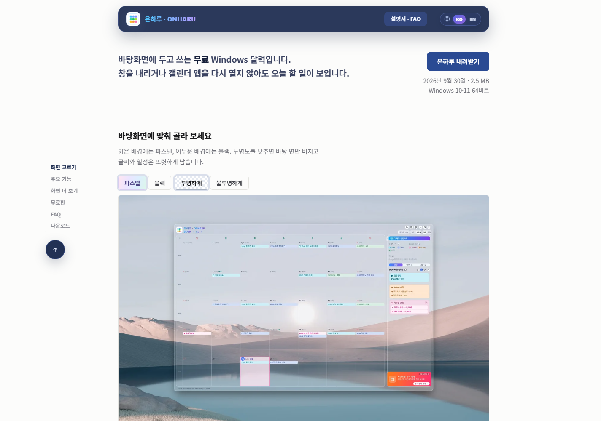

필요해서 시작한 일을
쓸 수 있는 도구로 만듭니다.
물류 현장에서 반복하던 계산과 자료 찾기를 줄이고, 매일 확인하는 일정은 바탕화면에 두었습니다. 직접 쓰면서 고치고, 확인한 내용은 글로 남깁니다.
- 만드는 사람
- JUAN.HJLEE
- 주로 다루는 것
- 물류 · Windows 도구 · 기록
WINDOWS APP
온하루 · ONHARU
Google·Microsoft 일정과 내 PC의 일정을 한 달력에서 봅니다. 창을 내리지 않아도 바탕화면에서 오늘 일정을 확인할 수 있습니다.
- 현재 버전
- 2.2.26
- 지원
- Windows 10·11 64비트
- 이용
- 무료


CONTAINER LOADING TOOL
CubeStow
컨테이너 제원과 화물 정보를 입력해 배치안을 만들고, 공간 사용률·중량 분포·무게중심과 고정 조건을 함께 확인합니다.
- 3D 적재 결과와 작업 순서
- 중량·축하중·바닥 하중 검토
- CTU Code 기준의 고정 계획
자료와 기록
도구를 만들며 확인한 내용을 다시 찾을 수 있게 정리합니다.
미니멀라이프를 추구합니다. 배움은 맥시멀라이프면 좋겠습니다.
support@onharu.app